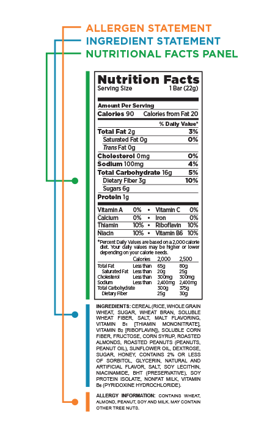

Consequences of these substances include diabetes, high blood pressure, heart failure, neurological diseases, and many kinds of cancers. There is a plethora of research that provides evidence of these consequences, yet governments and organizations are lobbied and provided biased studies to keep these chemicals legal.
The wide array of harmful additives in our food feels it could utilize all the letters in the alphabet in all sorts of combinations, such like BHA, BHT, TBHQ, PEAS, BVO, etc. ABCDEFG, you get the picture.
A focus on the most common consumptions
In considering of the insurmountable kinds of chemicals and modifications to our food, the seemingly endless list of of these needs to be tackled one at a time. For this purpose, we will be concentrating on some of the most prevelant occuring and commonly consume additives on the market. It's iperative to recognize that artificial sweetners, artificial colors, and nitrates/nitrites in our food that have been proven to cause devestation on the consumer's health should be avoided and even outlawed.
Stomach and digestions problems: Bloating, thining of membranes, altered stomach microbiome
Poorly regulated blood sugar
Weight gain
Cardiovascular disease and cancers
Increases inflammation and disrupts the functioning of the immune system
Cause cancers due to contaminants in dyes
Causes hypersensitivity, especially in children.
Negatively impacts the functioning of the liver and other vital organs
Oxygen deprevation
Cardiac dysrithmias/dysfunctions
Nervous systems dysfunctions
Cardiovascular disease and cancers
Change for the better
These hidden poisons in our food can be identified and avoided once you learn them. They can be read in the ingredients labels on food packaging and you can identify brands that use these checmials and avoid them.
 Harmful ingredients will often appear as a normal ingredient or be specially seperated with a warning. Depending on the chemical.Brands and their companies that a consumer should be vigilant for and more chemicals and their hazards can be found on this site, and it is important to note that there are many more beyond what is listed here. In a market truly oversaturated with harmful substances it's important to consider your health and check what you are buying before you or your family consumes it.